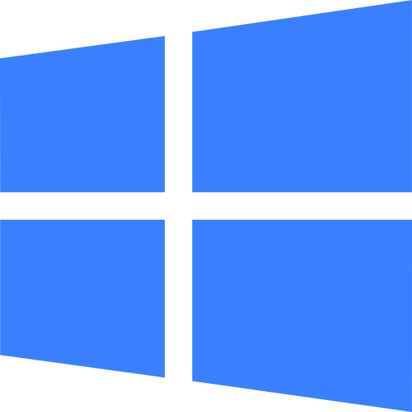
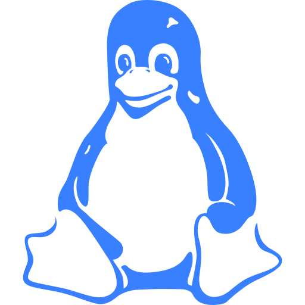
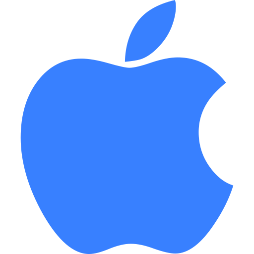

  
{{agent['_node']}}
{{agent['_hostName']}}
Ubicacion geografica: {{agent['_localization']}}
Datos de contacto: {{agent['_contact']}}
{{agent['_hostName']}}
Ubicacion geografica: {{agent['_localization']}}
Datos de contacto: {{agent['_contact']}}